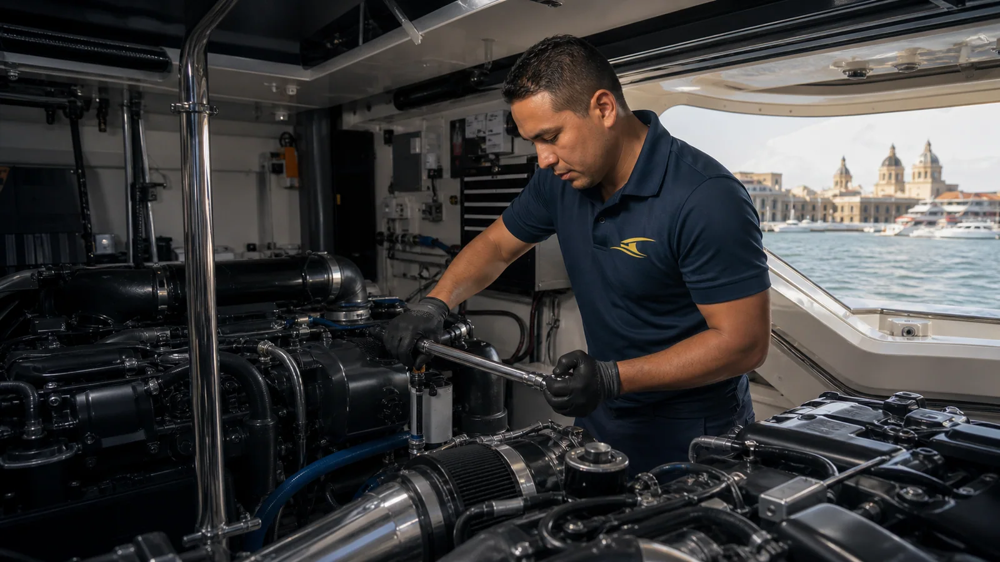
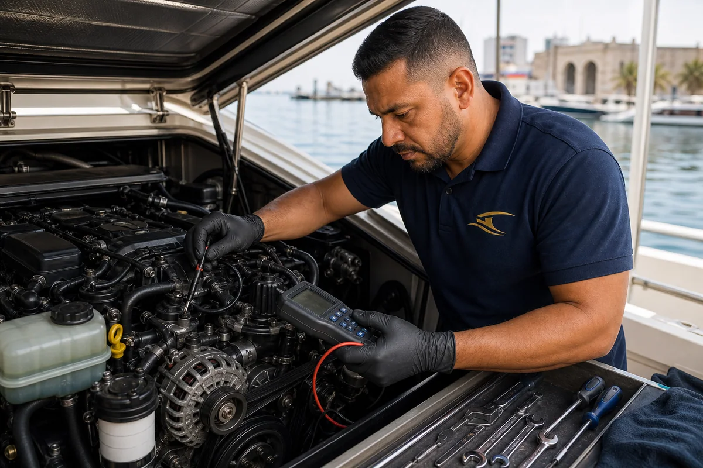

Diagnóstico de Fallas
Alarmas, pérdida de potencia, humo, vibraciones, fugas, consumo irregular, dificultad de arranque y ruidos anormales.

Diagnóstico · Mantenimiento · Reparación
Diagnosticamos, mantenemos y reparamos motores marinos, generadores y sistemas auxiliares. Primero identificamos la causa; después definimos el trabajo y los repuestos necesarios.
Diagnóstico antes de reparar
Una alarma, una pérdida de potencia o un sobrecalentamiento pueden tener diferentes causas. Revisamos el sistema completo antes de recomendar repuestos o desmontajes innecesarios.
El alcance y el valor se confirman después de la visita técnica. Si durante el trabajo aparece un daño adicional, lo documentamos y solicitamos autorización antes de continuar.

Servicio mecánico para embarcaciones
El trabajo se adapta al motor, las horas de uso, el historial de mantenimiento y el diagnóstico real de la embarcación.
Alarmas, pérdida de potencia, humo, vibraciones, fugas, consumo irregular, dificultad de arranque y ruidos anormales.
Aceite, filtros, impulsor, correas, refrigerante, ánodos, combustible, abrazaderas, mangueras y pruebas según horas de uso.
Reparaciones en alimentación de combustible, lubricación, refrigeración, admisión, escape y componentes auxiliares.
Revisión de toma de mar, filtros, impulsor, intercambiador, termostato, circulación, mangueras y nivel de refrigerante.
Diagnóstico coordinado de motor de arranque, alternador, baterías, conexiones, protecciones y caída de voltaje.
Comprobación de niveles, fugas, enfriamiento, correas, alarmas, carga y funcionamiento antes de un viaje o temporada de uso.
Proceso transparente
Marca, modelo, horas, historial, alarmas y comportamiento del motor.
Identificamos la causa probable y definimos si se requieren pruebas adicionales.
Mano de obra, repuestos, autorizaciones y tiempo estimado antes de intervenir.
Montaje, niveles, pruebas de funcionamiento y recomendaciones de seguimiento.
Mecánica + Electricidad Naval
Coordinamos el diagnóstico de arranque, alternador, baterías, cableado, tableros y protecciones para evitar cambiar piezas mecánicas cuando la causa está en la alimentación eléctrica.
Preguntas frecuentes
Envíenos la marca, el modelo, las horas del motor, el síntoma y la ubicación de la embarcación. Coordinaremos la visita técnica en Cartagena.
Cotizar por WhatsApp